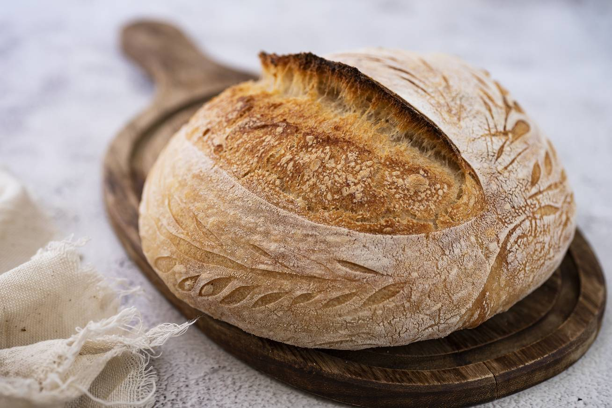

| 7. |
Ciabatta |
|
Az olasz ciabatta ropogós héjú, légbuborékos belsejű kenyér. Bár sokan kedvelik, engem nem igazán nyűgözött le. Ritkán találkozom vele, és nem érzem, hogy különösebb haszna lenne számomra, ezért a rangsorom végére került. |
| 6. |
Baguette |
 |
A hosszú, vékony baguette híres ropogós héjáról, de számomra nem elég praktikus a hossza és keskenysége miatt. Emellett Franciaország létezését megvetem, így ez a kenyér csak a hatodik helyet érdemelte ki. |
| 5. |
Rozskenyér |
 |
A rozslisztből készült rozskenyér sötétebb színű és dúsabb ízvilágú. Ennek ellenére túl keménynek találom és sötét a színe, és az íze sem igazán nyerte el a tetszésemet. Ritkán fogyasztom, és nem hiányzik különösebben, ezért az ötödik helyre került meg azért mert sötét a színe. |
| 4. |
Pita |
|
A közel-keleti lapos pita különféle finomságokkal megtöltve, például gyros vagy kebab mellett, tökéletes páros. Bár szeretem az ízét és sokoldalúságát, csak ritkán eszem, ezért a rangsorom negyedik helyére került. |
| 3. |
Fehér kenyér |
 |
A fehér kenyér egyszerű, puha, és sokak számára a legismertebb kenyérfajta. Az hogy ez a fajta kenyér birtokolja a legjobb színt ami a földön lehet , szóval fehér , az egy nagyon nagy plusz pont. Gyakran fogyasztom, de a vékonysága miatt nem érzem igazán laktatónak, és nem adja meg azt az igazi kenyérélményt, amit keresek. Ezért a harmadik helyen áll. |
| 2. |
Kovászos kenyér |
 |
A kovászos kenyér enyhén savanykás íze és ropogós héja miatt nagy kedvencem. Különösen levesekhez vagy pörköltekhez illik, és mindig különlegesebbnek érzem, ha ezt eszem. Ezért kapta meg a második helyet. |
| 1. |
Teljes kiőrlésű kenyér |
 |
A teljes kiőrlésű kenyér minden szempontból tökéletes számomra: megfelelő állagú, laktató, és az íze is kiváló. Mindennap szívesen fogyasztom, és szinte minden ételhez remekül passzol. Ezért került a rangsorom élére. |